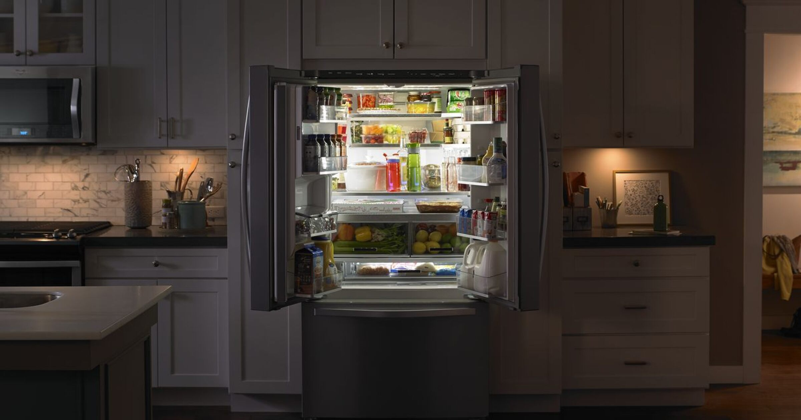
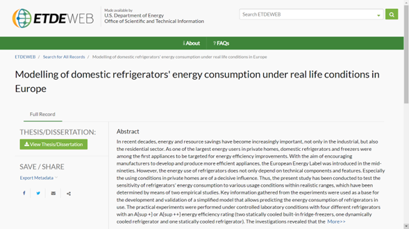
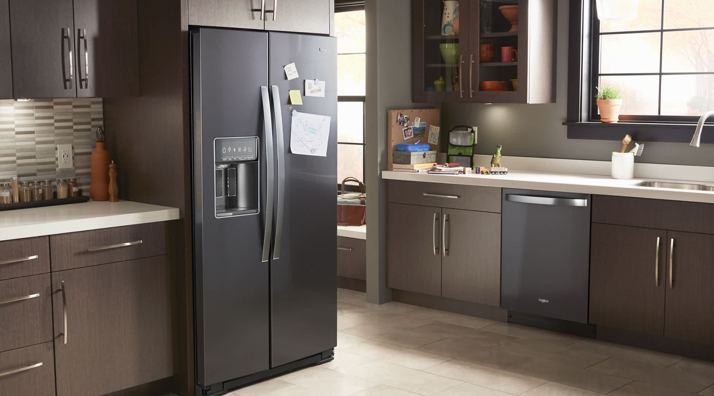
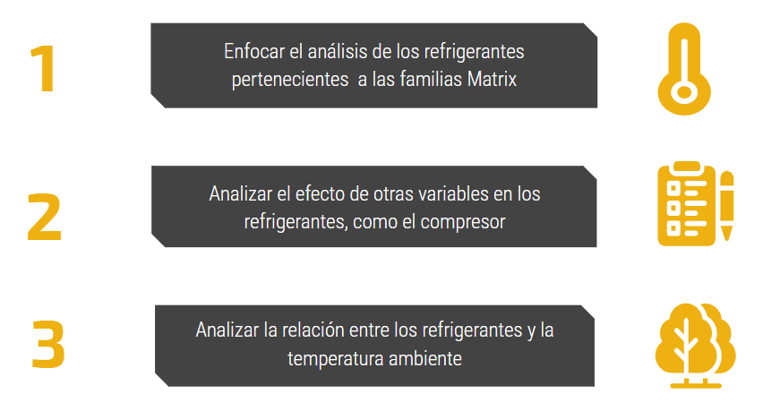

INICIO
TABLERO GENERAL
TABLERO TENDENCIAS I
TABLERO TENDENCIAS II
TABLERO ENERGÍA
CONTACTO

Análisis del comportamiento en refrigeradores
¿Cuál es el costo de ahorrar energía?
De las
512
unidades probadas:
Se estimó que el
80%
consumiría en un año
menos energía
de la esperada.
De esta misma muestra, poco más del
50%
de las unidades presenta
temperaturas
promedio
fuera de rango
.
¿Cuál es el problema de esto?
Temperatura
Fallos en la temperatura provocan dificultades.
Esto es un problema de consistencia y balance.
La consistencia garantiza seguridad.
Seguridad consolida confianza en usuarios.
Energía
Profundizando en el problema...
Refrigerador
Congelador
Existe una cantidad considerable de puntos que se encuentran fuera del rango óptimo.
Predominan las unidades calientes pertenecientes a la plataforma de Matrix, y las frías a Pira XL y Highland.
Existe una relación inversamente proporcional entre el consumo de energía, la cual es muy simple: entre más energía se consume más frías son las temperaturas, y viceversa.
No obstante, la realidad es que se tienen dos grupos de unidades que no respetan esta tendencia, limitando la estimación del consumo de energía esperado; e indicando la presencia de una causa subyacente.
¿Qué podemos hacer con esta información?
Analizar la relación entre los refrigerantes y la temperatura ambiente


Recomendaciones
